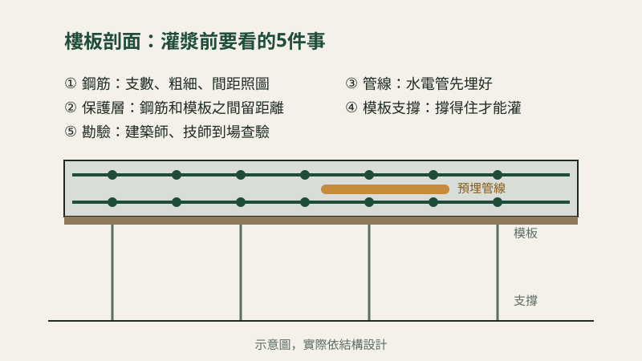
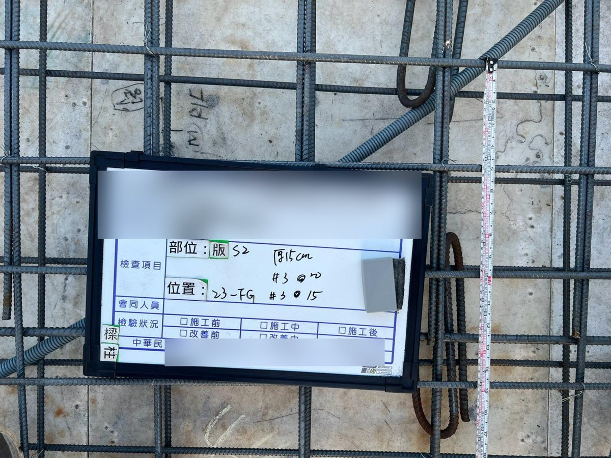

樓板灌漿前，工地在檢查什麼？屋主看得懂的5個重點

蓋房子最關鍵的時刻之一，就是每一層樓板的混凝土灌下去之前。因為一旦灌漿，裡面的鋼筋、管線就全部被封起來，事後很難再改。
一句話回答：灌漿前要確認「鋼筋對不對、管線埋好沒、模板撐不撐得住」。
一、鋼筋：數量、粗細、間距要跟圖一樣
- 鋼筋的支數、粗細、排列間距，都要和結構圖相符。
- 鋼筋和模板之間要留一段距離（保護層），讓混凝土把鋼筋完整包住，日後才不容易生鏽。

二、管線：水電管路要先埋好
- 樓板裡會預埋電線管、給排水管，灌漿前要確認位置和數量，避免日後要打牆、打地。
三、模板與支撐：撐得住才能灌
- 樓板下方的模板和支撐要穩固，灌漿時才不會變形或下陷。
四、勘驗：依規定由建築師、技師到場查驗
- 依規定需要勘驗的施工階段，由建築師或技師到現場檢查並拍照紀錄，通過後才進行下一步。

五、灌漿當天與之後的養護
- 灌漿時要搗實，避免混凝土裡有空洞（蜂窩）。
- 灌完之後要灑水養護，讓混凝土慢慢達到應有的強度。
屋主可以怎麼參與？
灌漿前可以請工地負責人說明這一層的檢查結果，看看現場照片。我們每一個案場都會留下施工照片紀錄。
實際做法依結構設計、建築師與技師的要求而定。